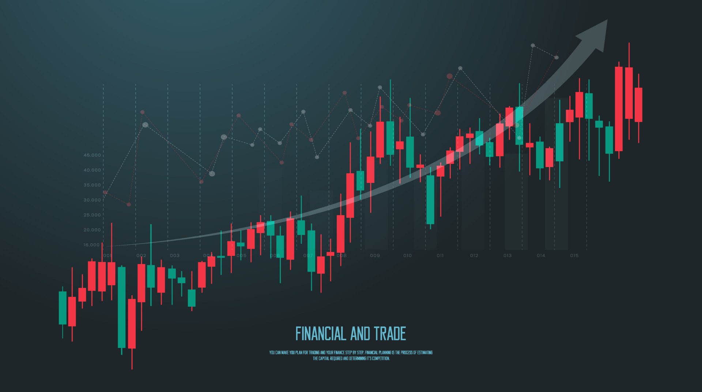
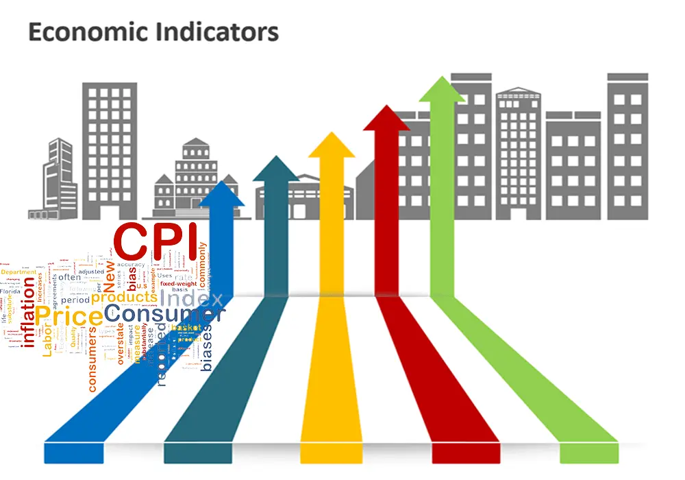
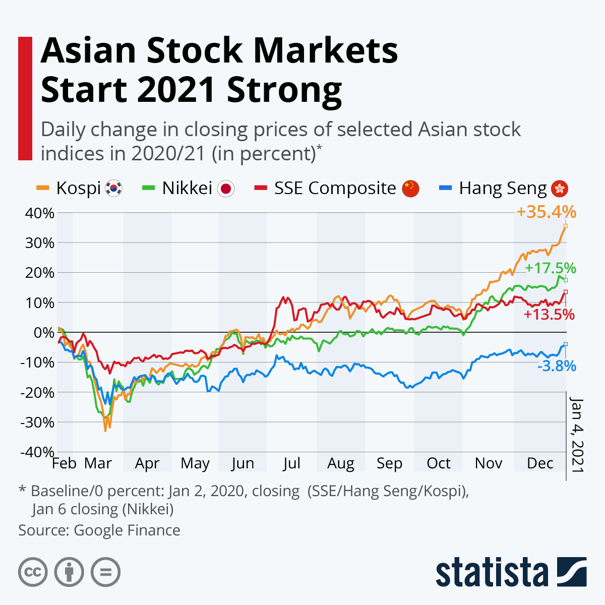
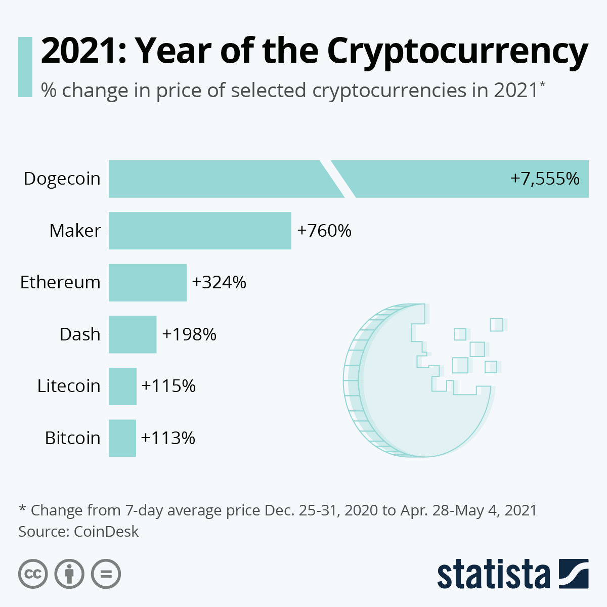
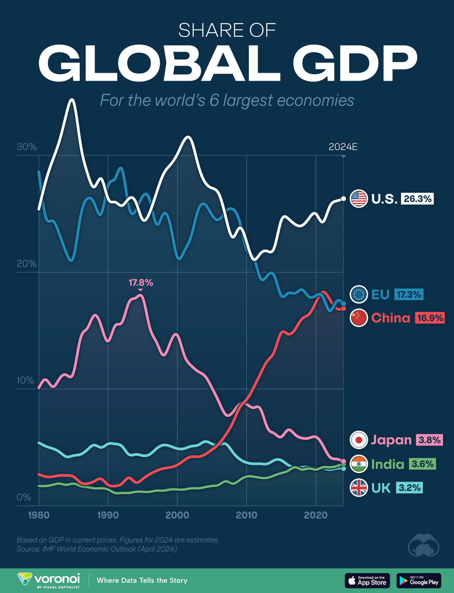

Visual Insights into Financial Analysis
Welcome to the Photos section of Financial Analysis. Here, we provide a collection of images and infographics that illustrate key concepts, trends, and data in the world of finance. These visuals are designed to enhance your understanding of financial topics and make complex information more accessible.
Market Trends

This infographic highlights the latest market trends, including stock performance, economic indicators, and investment opportunities.
Investment Strategies
Explore various investment strategies with this visual guide, covering topics such as diversification, risk management, and portfolio allocation.
Economic Indicators

Understand the key economic indicators that influence financial markets, including GDP, unemployment rates, and inflation.
Infographics and Charts
In addition to photos, we also provide a variety of infographics and charts that break down complex financial data into easy-to-understand visuals. These resources are perfect for students, professionals, and anyone interested in gaining a deeper understanding of finance.
Stock Market Performance

This chart tracks the performance of major stock indices over the past decade, providing insights into market cycles and trends.
Cryptocurrency Growth

Visualize the rapid growth of cryptocurrencies and their impact on the financial landscape with this informative infographic.
Economic Comparison

Compare the economic performance of different countries with this comprehensive chart, highlighting key metrics such as GDP, inflation, and trade balances.